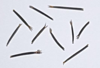

Planta con propiedades medicinales y al mismo tiempo, con ciertos peligros por su toxicidad. Los frutos son cápsulas espinosas que contienen numerosas semillas. La mayoría son negros, aunque también hay claros. Descripción: Semilla áspera, rugosa, reniforme (forma de riñón) de 4mm de longitud aproximada.
Es el proceso de una hibridación (proceso de mezclar diferentes especies o variedades) y es considerado mala hierba ya que es muy dañino para la agricultura. Descripción: Ovalado, de color castaño oscuro (también hay algunos claros), con líneas marcadas en su superficie.
Planta trepadora de flores acampanadas, celestes, azuladas y de otros colores. Descripción: Ovaladas de color negro, con dos caras planas y una convexa. Su fruto es una cápsula con semillas negras o parduzcas (4 semillas) con forma de gajo.

Es una de las malezas más difundidas que posee un componente químico llamado cumarina que desprende un potente olor. Descripción: Semilla oval de 2mm aproximadamente con nervaduras dirigidas irregularmente, de color amarillento verdoso.
Existen varias especies. Nosotros nos ocuparemos de la malva cimarrona, que es una semilla solitaria. Descripción: Semilla reniforme-triangular, áspera, parda oscura, de 2 mm de largo.
Invasora, también llamada avena negra. Se destaca por su rusticidad y buena producción de forraje. Descripción: De color castaño claro a oscuro. Posee aristas duras, superficie rugosa, con algunos pelitos en la base.
Comúnmente llamado cardo mariano, se caracteriza por poseer espinas en sus hojas. Se suele encontrar en los bordes de los caminos, resaltando la flor, que es muy colorida. Descripción: Es oblongo y mide de 6 a 8mm de largo aproximadamente. Es de color café oscuro brillante.
Utilizado en Ecuador por chamanes para tratar la epilepsia. Es una maleza de los cultivos de soja en la región pampeana, pudiendo ocasionar grandes pérdidas de rendimiento. Descripción: Es muy pequeño y redondo de apariencia negruzca (aunque realmente es de color rojo intenso), brilloso y fácil de reconocer pues se adhiere a los dedos.
Es la semilla que contiene la planta en estado de maleza, debido a una sustancia tóxica llamada ácido erúsico. Pertenece a la misma especie que la colza canola y no son diferenciables entre sí a simple vista sino por análisis de laboratorio. Descripción: Semillas globulares de 1.5 a 2mm de diámetro, de color café o negro.
Son semillas contaminantes de cereales de granos pequeños, ampliamente naturalizada. Es una importante maleza en cultivos de invierno y pasturas. Suele crecer formando manchones. Descripción: Es una semilla globosa, opaca, rojiza a ocreácea, finamente reticulada, de 3,5mm aproximadamente, esferoidal reticular, irregularmente redondeadas.
Semilla de césped, también conocida como inglés forrajero destinada a pastoreo ya que su calidad como alimento es excelente. Es una semilla de rápida germinación. Descripción: De cascarita hueca alargada y de color claro.

Se encuentra en cultivos de nabo o colza. No es tan frecuente como otras malezas en cultivos y jardines. Descripción: Es de forma redonda a semi-oval, rugosa y con estrías de color amarillento ocráceo. Algunas poseen un apéndice.
Especie invasora también llamada enredadera anual. Descripción: Es de color negruzco ligeramente castaño con tres caritas de forma piramidal.
Aunque es considerada una mala hierba, sus hojas y raíz tienen importantes propiedades medicinales, de uso frecuente en China. Descripción: Sus frutos tienen la forma de un palito de color negro y se adhieren al ganado y seres humanos por medio de unos ganchos que se bifurcan en uno de sus extremos.
Es de alta calidad nutricional. La variedad dulce es utilizada como forraje y como cultivo. Sus tallos también contienen mucho azúcar, de grado similar al de la caña de azúcar. Como forraje, la mayor utilidad es el ensilado y como cultivo, está destinado a la producción de azúcar, alcohol y biocombustibles. La característica destacada es su resistencia a la falta de agua. Descripción: De forma oval. Su coloración ocre brillosa es debida a un néctar muy dulce que posee.